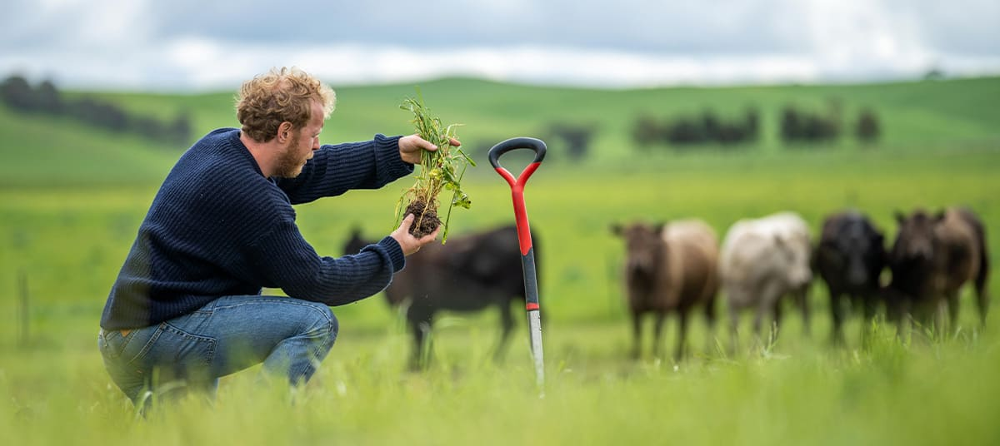
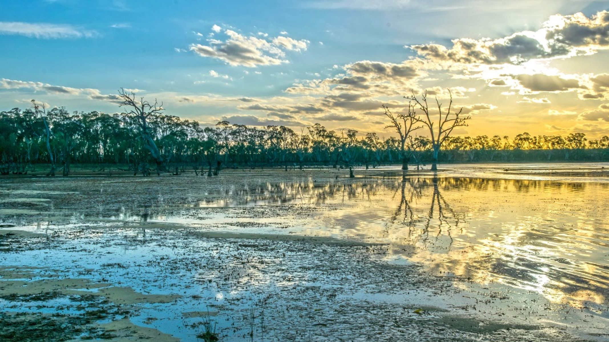
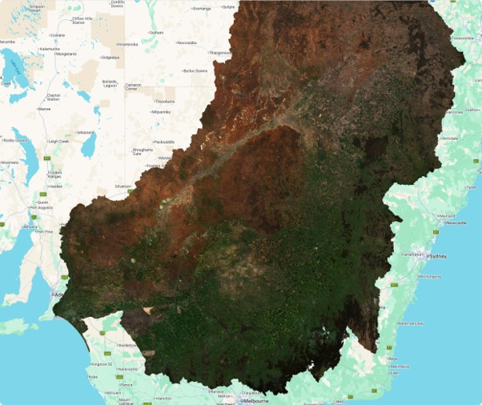

Purpose
Australian farmers across the Murray-Darling Basin experience very different levels of water security depending on where they farm, the water entitlements they hold and how much water is available each year. The Farmer's Basin brings this together to show how water security affects farmers across the Basin.
Explore Farmer Impact
- Compare Regional Security
 View Allocation Reliability
View Allocation Reliability- Assess Water Market Conditions
- Farmer Profiles
- Compare Policy Impacts
- Review Economic Indicators & Risk

Why it Matters
The Basin underpins a major share of Australian agriculture, but the water it supplies is not shared evenly. When allocations fall, some regions feel it first and hardest.
8,400
irrigated agricultural businesses depend on the Basin
Source: Murray-Darling Basin Authority, 2023
$30B
in Basin agricultural output each year
Source: Murray-Darling Basin Authority, 2023
37%
decline in rice production, driven by reduced water availability
Source: Murray-Darling Basin Authority, 2023